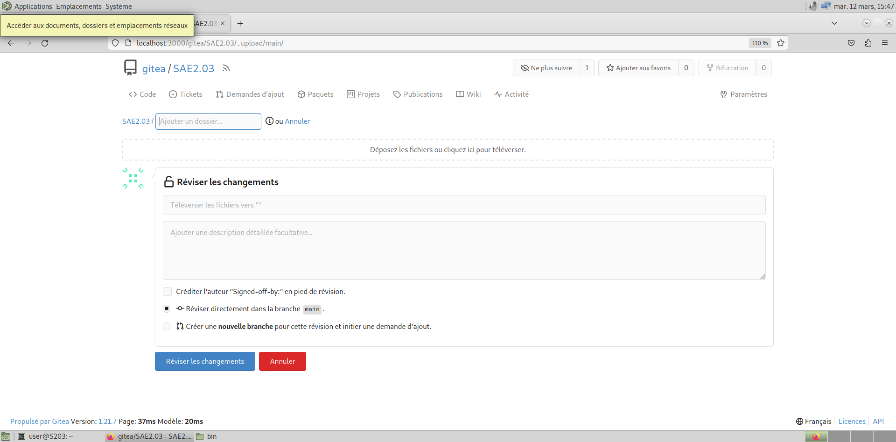

1 Configuration matérielle dans Virtual Box
- Que signifie “64-bit” dans “Debian 64-bit” ?
Le 64 bits dans “Debian 64-bit” indique que c’est la version 64 bits de Debian.
Un OS en 64 bits nécessite un processeur en 64 bits également, cela permet à l’OS d’être plus performant, de pouvoir gérer plus de données et d’avoir un seuil maximal de mémoire RAM beaucoup plus élevé.
- Quelle est la configuration réseau utilisée par défaut ?
La configuration réseau utilisée par défaut est NAT1.
- Quel est le nom du fichier XML contenant la configuration de votre machine ?
Le fichier XML contenant la configuration de la machine se nomme sae203.xml.
- Sauriez-vous le modifier directement ce fichier de configuration pour mettre 2 processeurs à votre machine ?
Ce fichier n’est pas modifiable directement, il faut passer par VBox afin de modifier la configuration de celui-ci.
2 Installation OS de base
- Qu’est-ce qu’un fichier ISO bootable ?
Un fichier ISO bootable est une image d’un CD qui peut être exécuté. Dans notre cas, on l’exécute au démarrage de la machine afin d’installer l’OS.
- Qu’est-ce que MATE ? GNOME ?
MATE et GNOME sont des environnements de bureau, qui permettent de modifier l’interface graphique de l’OS.

- Qu’est-ce qu’un serveur web ?
Un serveur WEB est une machine connectée à Internet qui stocke différents fichiers. Celui-ci les transmet aux machines qui les demandent lorsqu’ils se connectent au serveur.
- Qu’est-ce qu’un serveur ssh ?
SSH2 est un protocole réseau qui permet aux administrateurs d’accéder à distance à un ordinateur, en toute sécurité.
- Qu’est-ce qu’un serveur mandataire ?
Un serveur mandataire, ou proxy est un serveur informatique qui a pour fonction de relayer des requêtes entre un poste client et un serveur.
3 Sudo
- Comment peux-ton savoir à quels groupes appartient l’utilisateur user ?
Pour connaitre les groupes d’un utilisateur courant, on peut utiliser la commande
groups. La commandegroups \<user>permet de connaitre les groupes d’un utilisateur en particulier.
- Comment donner les droits sudo à un utilisateur ?
Pour donner les droits sudo à un utilisateur nommé toto, on utilise la commande
usermod -aG sudo totodepuis l’utilisateur root.
4 Suppléments invités
- Quel est la version du noyau Linux utilisé par votre VM ? N’oubliez pas, comme pour toutes les questions, de justifier votre réponse.
Pour connaitre la version du noyau Linux utilisé, on peut utiliser la commande
uname -r, qui dans notre cas affiche 6.1.0-17-amd64.
- À quoi servent les suppléments invités ? Donner 2 principales raisons de les installer.
Les suppléments invités permettent d’ajouter de nouvelles fonctionnalités pour la VM, tel que l’ajustement automatique de la résolution d’écran, le glisser-déposer ou encore les dossiers partagés.
- À quoi sert la commande
mount(dans notre cas de figure et dans le cas général) ?
La commande
mountpermet de demander au système de rendre un système de fichiers accessible, à un emplacement spécifié.
5 Quelques Questions
- Qu’est-ce que le Projet Debian ? D’où vient le nom Debian ?
D’après la FAQ du site de Debian, le projet vise à créer un système d’exploitation, compatible Unix, libre et de grande qualité complété d’un ensemble d’applications. Le nom Debian est la contraction des noms Debra et Ian Murdock qui a fondé le projet.
5.1 - La maintenance
- Il existe 3 durées de prise en charge (support) de ces versions : la durée minimale, la durée en support long terme (LTS) et la durée en support long terme étendue (ELTS). Quelle sont les durées de ces prises en charge ?
D’après le site de Debian et le Wiki Debian, La durée minimale de support des versions Debian est de 3 ans, 5 ans pour le LTS et 10 ans pour le ELTS
- Pendant combien de temps les mises à jour de sécurité seront-elles fournies ?
D’après la FAQ du site officiel Debian, l’équipe en charge de la sécurité publie des mises à jour de sécurité sur la version stable pendant 3 ans après sa publication.
5.2 - Nom générique, nom de code et version
- Combien de version au minimum sont activement maintenues par Debian ? Donnez leur nom générique (= les types de distribution).
Debian annonce sur son site avoir toujours au moins 3 versions activement maintenues, la version “stable”, “testing” et “unstable”.
- Chaque distribution majeure possède un nom de code différent. Par exemple, la version majeure actuelle (Debian 12) se nomme Bookworm. D’où viennent les noms de code donnés aux distributions ?
Le Wiki Debian indique que les noms de code donnés aux distributions proviennent des personnages provenant des films Toy Story.
- L’un des atouts de Debian fut le nombre d’architectures officiellement prises en charge. Combien et lesquelles sont prises en charge par la version Bullseye ?
D’après le Wiki Debian, 9 architectures sont prises en charge par Debian Bullseye.
Première version avec un nom de code
Toutes les réponses des deux prochaines parties sont issues du Wiki Debian
Quel a été le premier nom de code utilisé ?
Le premier nom de code à avoir été utilisé est Buzz
Quand a-t-il été annoncé ?
Elle a été publiée le 17 juin 1996.
Quel été le numéro de version de cette distribution ?
Il s’agit de la version 1.1 de Debian.
Dernier nom de code attribué
Quel est le dernier nom de code annoncé à ce jour ?
Le dernier nom de code annoncé est Forky.
Quand a-t-il été annoncé ?
Ce dernier a été annoncé le 13 octobre 2022.
Quelle est la version de cette distribution ?
Il s’agit de la version 14 de Debian.

6 Automatisation
6.1 Ajustements de la pré-configuration
- Ajouter le droit d’utiliser sudo à l’utilisateur standard
- Installer l’environnement MATE.
- Ajouter les paquets suivants :
- sudo : sinon la gestion sudo est inutile
- git, sqlite3, curl : pour préparer l’installation de la semaine prochaine
- bash-completion : va vous simplifier grandement l’écriture des lignes de commande
- neofetch : pas très utile, mais c’est un classique dans son genre (essayez-le)
Afin de modifier la pré-configuration de la machine, il faut modifier le fichier preseed-fr.cfg dans le dossier autoinstall de notre machine
Pour donner les droits sudo à l’utilisateur, on modifie la ligne concernant les groupes par défaut, on obtient ceci :
d-i passwd/user-default-groups string audio cdrom video**
Pour installer l’environnement MATE, on modifie mes lignes concernant les métapaquetages, ce qui donne la ligne suivante
tasksel tasksel/first multiselect standard ssh-server mate-desktopPour ajouter les paquets demandés, on ajoute, à la suite de la ligne précédente, cette commande :
d-i pkgsel/include sudo git sqlite3 curl bash-completion neofetchCe qui nous donne ceci :
7 Git
7.1 Les interfaces graphiques pour Git
Qu’est-ce que le logiciel gitk ? Comment se lance-t-il ?
Gitk est un logiciel graphique permettant de visualiser l’historique d’un projet Git, les différentes branches, commits ainsi que toutes les informations associées. Il peut se lancer via un terminal via la commande
gitkdans un terminal ou via l’interface de Git GUI.Qu’est-ce que le logiciel git-gui ? Comment se lance-t-il ?
Git GUI est une interface graphique de Git qui permet aux utilisateurs de réaliser de nouveaux commits, supprimer des commits existants, créer de nouvelles branches, fusionner les branches existantes ou push les changements vers un répertoire distant.
Contrairement à GitK, Git GUI n’affiche pas l’historique du projet et se concentre sur les commits.
On peut le démarrer via la commandegit guidans un terminal.
7.2 Installons autre chose et comparons
Pourquoi avez-vous choisi ce logiciel ?
Nous avons choisi d’installer GitKraken, car c’est un logiciel polyvalent et populaire qui permet la visualisation de l’historique ainsi que la gestion des commits tout en proposant une interface épurée et ergonomique.
Tout cela via un client gratuit, ainsi qu’un client payant proposant plus de fonctionnalités.
Comment l’avez-vous installé ?
Sur Debian, on peut installer Git Kraken via les commandes :
wget https://release.gitkraken.com/linux/gitkraken-amd64.deb
sudo apt install gitkraken-amd64.debComparez-le aux outils inclus avec git (et installé précédemment) ainsi qu’avec ce qui serait fait en ligne de commande pure : fonctionnalités avantages, inconvénients…
| Caractéristique | Gitk | GitKraken | Git GUI |
|---|---|---|---|
| Interface utilisateur | Interface graphique simple et minimale | Interface graphique moderne et intuitive | Interface graphique simple et fonctionnelle |
| Support des fonctionnalités Git | Affiche l’historique des commits et des branches | Gestion complète des dépôts Git, avec visualisation graphique | Offre des fonctionnalités de base pour gérer les dépôts Git |
| Intégration des graphes | Graphique des commits et des branches | Graphiques visuels pour l’historique des commits et les branches | Affiche les commits et les branches sous forme de graphiques |
| Fonctionnalités supplémentaires | Fonctionnalités limitées, principalement pour visualiser l’historique | Intégration avec GitHub, Bitbucket et GitLab, gestion des conflits, fonctionnalités de collaboration | Intégration avec des outils externes, comme des clients de merge |
| Personnalisation | Limitée | Personnalisation avancée de l’interface | Possibilité de personnaliser l’apparence et le comportement |

8 Gitea
8.1 À propos
Qu’est-ce que Gitea ?
Gitea est une plateforme de gestion de code source et de collaboration. C’est une solution open-source qui permet aux équipes de développeurs de travailler ensemble sur des projets de logiciels en utilisant Git pour le contrôle de version.
Gitea offre des fonctionnalités telles que le suivi des problèmes, la gestion des demandes de fusion, la gestion des autorisations d’accès.À quels logiciels bien connus dans ce domaine peut-on le comparer ?
Gitea peut être comparé à GitHub ou encore GitLab qui proposent des fonctionnalités similaires. Cependant, Gitea est reconnu pour être facile d’utilisation.
8.2 Installation
Nous installerons ici la dernière version de Gitea, la version 1.21.7 Afin d’installer Gitea depuis les binaires3, comme demandé dans le sujet, nous devons utiliser la commande :
wget -O gitea https://dl.gitea.com/gitea/1.21.7/gitea-1.21.7-linux-amd64` Puis afin de rendre exécutable Gitea, on utilise :
chmod +x gitea8.3 Contrôle de la signature GPG
Si le fichier binaire est téléchargé manuellement, on peut vérifier que le fichier n’a pas été modifié par d’autres personnes que Gitea, car ceux-ci signent les fichiers à l’aide d’une clé GPG. Une fois le fichier binaire téléchargé, on télécharge le fichier .asc correspondant à la version choisie, puis on a saisi les commandes :
gpg --keyserver keys.openpgp.org --recv 7C9E68152594688862D62AF62D9AE806EC1592E2
Puis :
gpg --verify gitea-1.21.7-linux-amd64 gitea-1.21.7-linux-amd64
Si le message obtenu contient la mention
Good signature from "Teabot <teabot@gitea.io>" alors
le fichier n’a subi aucune modification, sinon le message contiendra la
mention
This key is not certified with a trusted signature!. Ce qui
signifie que le fichier a été modifié et qu’il peut donc ne pas être
fiable.
8.4 Configuration serveur
Afin de pouvoir être exécuté, Gitea nécessite d’avoir Git d’installé sur la machine avec une version supérieure ou égale à la 2.0.
8.4.1 Création utilisateur
Il faut créer un utilisateur afin de pouvoir utiliser Gitea, afin d’en créer un on utilise les commandes :
adduser \
--system \
--shell /bin/bash \
--gecos 'Git VErsion Control' \
--group \
--disabled-password \
--home /home/git \
git 8.4.2 Création de la structure de répertoire requise
Gitea requiert une structure de répertoire particulière afin de pouvoir fonctionner, celle-ci ne se générant pas automatiquement lors de l’installation. Il faut alors la créer manuellement grâce aux commandes suivantes :
mkdir -p /var/lib/gitea/{custom,data,log}
chown -R git:git /var/lib/gitea/
chmod -R 750 /var/lib/gitea/
mkdir /etc/gitea
chown root:git /etc/gitea
chmod 770 /etc/gitea Le répertoire /etc/gitea est temporairement créé avec
les droits d’écriture pour l’utilisateur git afin que le web installer
puisse écrire le fichier de configuration. Il est recommandé d’enlever
ces droits une fois l’installation finie, cela peut être réalisé grâce
aux commandes suivantes :
chmod 750 /etc/gitea
chmod 640 /etc/gitea/app.ini8.4.3 Configurer le répertoire de travail de Gitea
Il est nécessaire de définir le répertoire de travail à utiliser par
Gitea, afin que celui-ci soit utilisé systématiquement.
On utilise la commande suivante afin de le définir.
export GITEA_WORK_DIR=/var/lib/gitea/8.4.4 Ajout de l’autocomplétion bash/zsh
Afin d’activer l’autocomplétion de bash ou de zsh, il est nécessaire
de télécharger le script correspondant et de le copier dans le
répertoire /usr/share/bash-completion/completions/gitea
pour bash ou /usr/share/zsh/_gitea pour zsh.
8.5 Mise à jour du service binaire Gitea
Quelle version du binaire avez-vous installé ? Donnez la version et la commande permettant d’obtenir cette information ?
Lors de notre installation, nous avons choisi la version 1.21.7 de Gitea.
Afin de connaître la version installée, on peut utiliser la commandegitea -vComment faire pour mettre à jour le binaire de votre service sans devoir tout reconfigurer ? Essayez en mettant à jour vers la version 1.22-dev.
Pour mettre à jour le binaire de notre service, il suffit de remplacer le fichier binaire dans
/usr/local/bin/giteapar le fichier binaire de la nouvelle version.
Il suffit ensuite de redémarrer Gitea. Afin de passer à la version 1.22-dev, on remplace donc le fichier actuel par le fichier
8.6 Tests d’utilisation
8.6.1 Création d’un dépôt
Gitea étant basé sur Git, il est possible de créer un dépôt afin d’y
stocker les fichiers issus d’un même projet. Pour ce faire, il suffit de
cliquer sur le logo correspondant dans le coin supérieur gauche de
l’interface Gitea comme sur la figure ci-dessous.

8.6.2 Configuration d’un nouveau dépôt
Suite à la création d’un nouveau dépôt, il sera nécessaire de configurer ce dernier, choisir son nom, sa visibilité…
8.6.3 Ajouter des fichiers à un dépôt
Vous pouvez ajouter des fichiers à un dépôt en cliquant sur le bouton
“Ajouter des fichiers” puis en sélectionnant ou en
glissant les fichiers que vous souhaitez ajouter.

9 Annexes
Afin de réaliser ce rapport, plusieurs ressources web ont été utilisées en voici la liste :
- FAQ
du site de Debian
- La page du site officiel de Debian répertoriant les versions de
Debian
- La page du Wiki Debian sur le support Debian
- La FAQ
Sécurité du site officiel de Debian
- La page du Wiki Debian répertoriant les distributions
Debian
- La page du Wiki Debian concernant Debian
Bullseye
- La documentation officielle de Git sur GitK
- La documentation officielle de Git sur GIT GUI
- Le site officiel de GitKraken
- La documentation officielle de Gitea
Ce rapport a été réalisé au premier trimestre 2024, dans le cadre d’un projet universitaire à l’IUT de Lille à l’aide de Markdown et l’outil Pandoc.
NAT signifie Network Adress Translation ou translation d’adresse réseau en Français.↩︎
SSH signifie Secure Socket Shell ou carapace sécurisée en Français.↩︎
Il est en effet possible d’installer Gitea de plusieurs manières différentes, depuis les fichiers binaires, comme ici, avec l’aide d’un gestionnaire de paquet, ou bien depuis le code source.↩︎